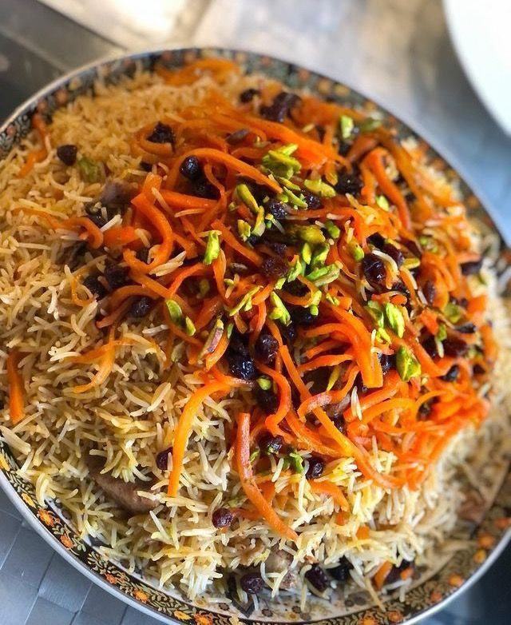
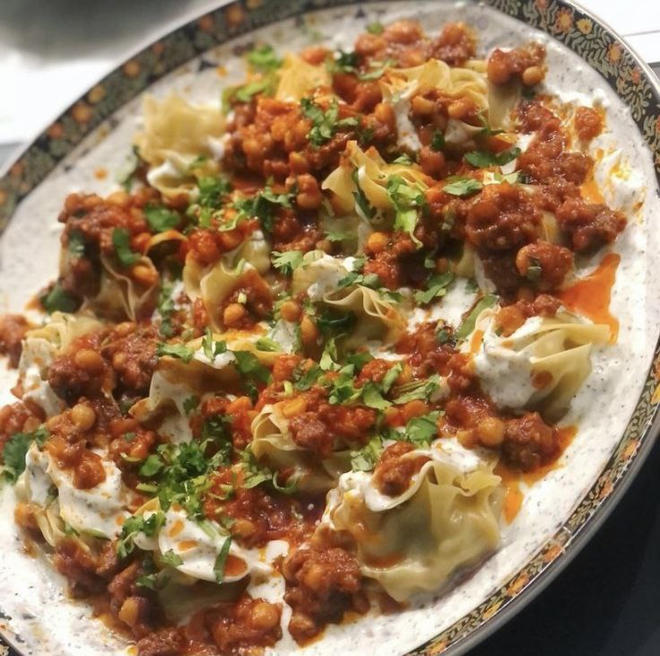
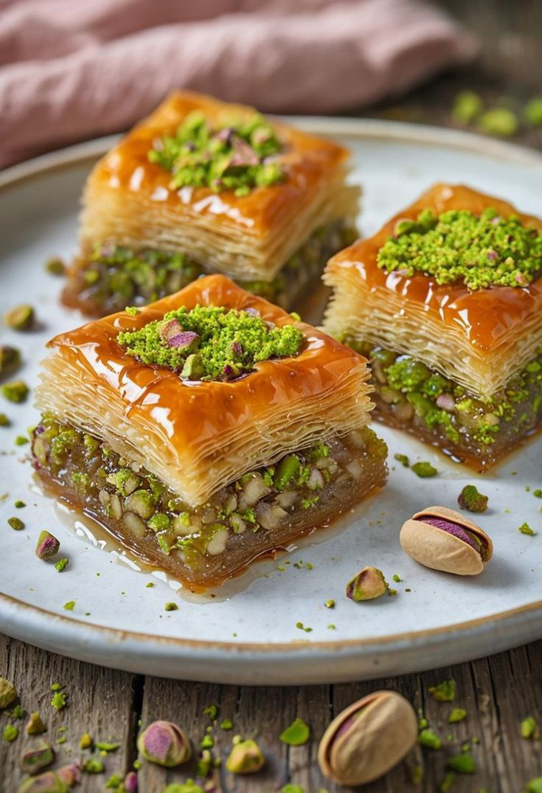
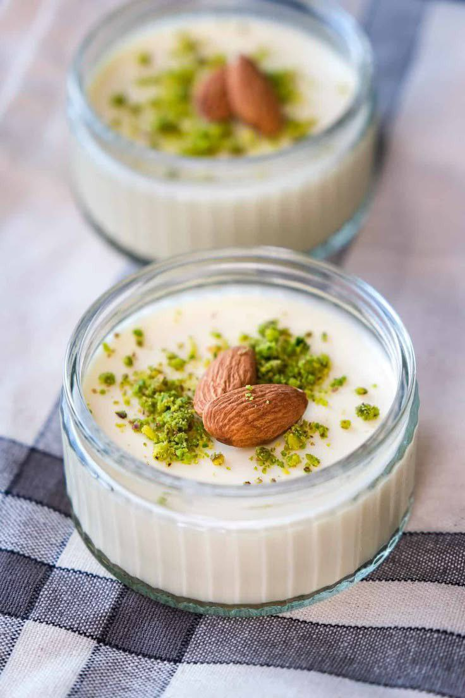
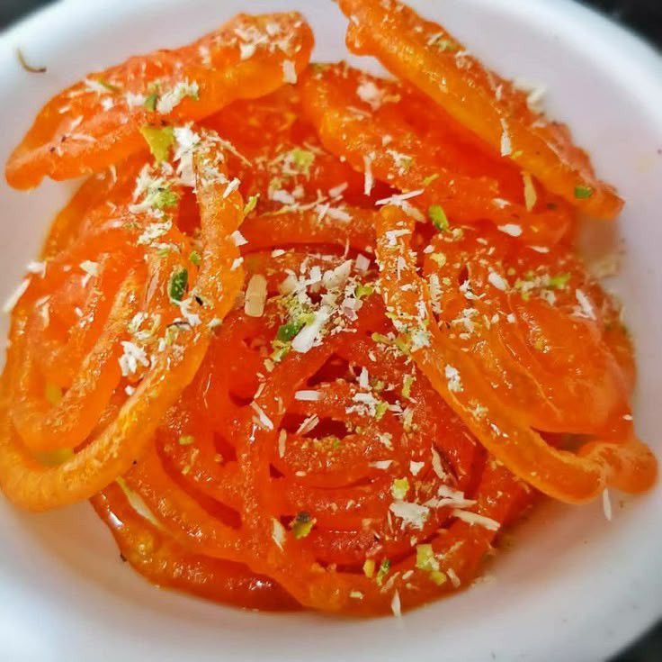

Afghani Polo - Full Recipe
Ingredients:
- Rice
- Chicken
- Saffron
- Cinnamon
- Cloves
- Onion
- Vegetables
- Rose Water
Instructions:
- Cook the rice until it is partially cooked.
- Cook the chicken with spices and onion.
- Combine the partially cooked rice and the chicken, then cook until fully done.
- Garnish with fried onions and a bit of rose water and serve.
Author:
Khalil Rahimi
Mantu - Full Recipe

Ingredients:
- Ground Beef
- Onion
- Mantu Dough or Thin Pastry Sheets
- Yogurt
- Garlic
- Spices
Instructions:
- Mix ground beef with onion and spices.
- Place a portion of the mixture into the dough sheets and fold them.
- Steam the Mantu until fully cooked.
- Serve with yogurt sauce and garlic topping.
Author:
Ahmad Khan - Afghan Chef
Ashak - Full Recipe
Ingredients:
- Ground Beef
- Onion
- Garlic
- Flour
- Spices
- Yogurt
Instructions:
- Mix flour, water, and salt to make the dough and roll it thin.
- Saute ground beef with chopped onions for the filling.
- Place some of the filling on the dough and fold it.
- Serve with yogurt and fresh herbs on top.
Author:
Reza Amin
Baqlava - Full Recipe
Ingredients:
- Yufka Pastry Sheets
- Crushed Pistachios
- Almonds or Walnuts
- Melted Butter
- Syrup (Water, Sugar, Rose Water, Saffron)
Instructions:
- Layer the yufka pastry sheets in a greased pan.
- Place crushed pistachios and almonds between the layers.
- Cut the surface into squares and brush with melted butter.
- Bake in the oven until golden brown.
- Pour syrup over the baklava after baking.
Author:
Maryam Yama
Fereni - Full Recipe
Ingredients:
- Milk
- Rice Flour
- Sugar
- Rose Water
- Cardamom Powder
Instructions:
- Mix milk and rice flour, then stir continuously.
- Add sugar, cardamom, and rose water.
- Cook on low heat until thickened.
- Pour into a dish and let cool.
- Garnish with pistachios or almonds.
Author:
Setareh Arshad
Jalabi - Full Recipe
Ingredients:
- White Flour
- Yogurt
- Baking Soda
- Saffron
- Thick Syrup
Instructions:
- Mix all ingredients and let the batter rest for a few hours.
- Fill the batter into a piping bag and deep-fry in hot oil.
- Fry until golden brown.
- Dip the fried Jalebi in syrup.
- Serve warm or cold.
Author:
Zaliha Niazi
Sheer Chai - Full Recipe

Ingredients:
- Milk
- Black Tea
- Sugar
- Cardamom
- Rose Water
Instructions:
- Brew tea and strain it.
- Boil the milk and add it to the tea.
- Add sugar, cardamom, and rose water.
- Simmer for a few minutes.
- Serve hot.
Author:
Omar Adib
Doogh - Full Recipe

Ingredients:
- Yogurt
- Cold Water
- Dry Mint
- Salt
- Grated Cucumber (Optional)
Instructions:
- Mix yogurt and water well.
- Add mint, salt, and cucumber.
- Chill in the refrigerator.
- Serve in a glass.
- Garnish with fresh mint leaves.
Author:
Khalagh Sadeqi
chai Zaferan - Full Recipe
Ingredients:
- Black Tea
- Saffron
- Cardamom
- Boiling Water
- Sugar or Honey
Instructions:
- Boil water.
- Place tea and saffron in the teapot.
- Add the boiling water and allow it to brew.
- Add cardamom.
- Serve with sugar or honey.
Author:
Syam Sami